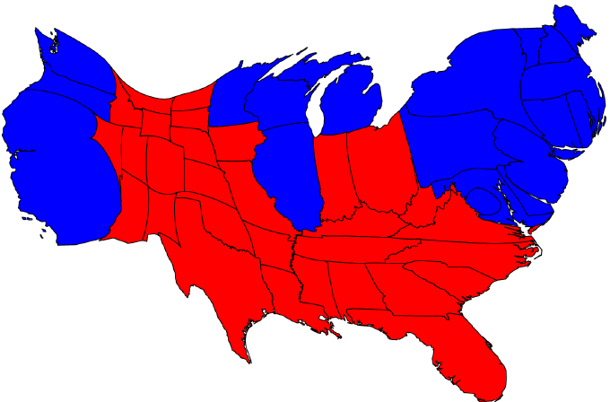
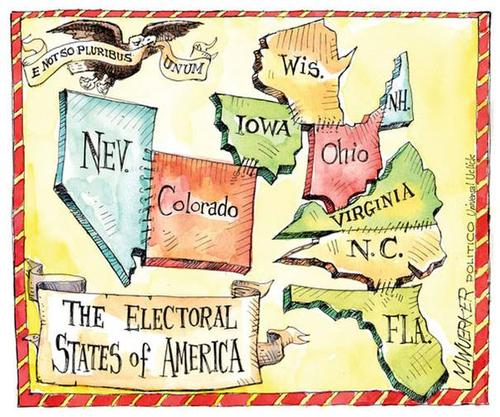
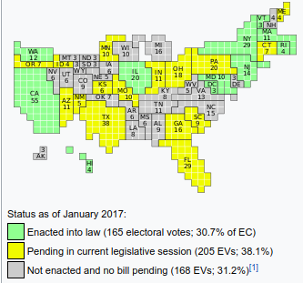

The Electoral College
By: Ryan Doherty
Why do we have this system?
-
One of the big questions the Founding Fathers had to answer was how the new government would choose the President.
-
They originally had two ideas which they thought had problems
-
Direct election- Where people vote directly for President.
Their problem with this was that the population wasn't well informed
-
Elected by Congress- Where only the Congress voted for the president.
Their problem with this was that it had violated the idea of an independent executive branch.
-
The Compromise
-
In the end they decided on an indirect popular vote, where
"Each State shall appoint,
in such Manner as the Legislature thereof may direct, a Number of Electors, equal to the whole Number
of Senators and Representatives to which the State may be entitled in the Congress: but no Senator
or Representative, or Person holding an Office of Trust or Profit under the United States, shall be appointed an Elector."
In this system the Electoral College, as it later became known as, would serve as a check on the popular vote.
It was to be made of educated, non-emotion driven electors.
What are the problems with the Electoral College?
- Winner Take All- Where the winner of the popular vote in the state got all of that state's electors. This is what most states use today.
- This makes it so that the minority party in a state goes unrepresented.
-
Underrepresented voters
- The state of Wyoming have 3 electoral votes and a population of 584,153
- While California has 55 electoral votes and a population of 39,144,818
-
Some simple math shows that Wyoming has 1 elector for every 193,717 people while California has 1 elector for every 711,723 people
meaning that a person in Wyoming is equal to 3.67 Californians.
Not only that but if Californians had the same representation as Wyomingites, California would have 202.1 electors.

Common arguments for the Electoral College and rebuttals
-
"Without it presidential candidates would ignore rural areas"
- Why should a candidate go to places with very few people as opposed to where lots of people live in the short few months of a campaign?
-
"It provides a check on the popular vote"

65,844,610
2,864,974
62,979,636
Alternatives
- Direct Vote (Popular vote) where everyone directly votes for the President
- Proportionally giving electoral votes based on a states popular vote
-
National Popular Vote Interstate Compact (NPVIC)
-
According to Florida HB 311, the NPVIC says that each state under the NPVIC
is to allocate its electoral votes towards the winner of the national popular vote.
This doesn't need a constitutional amendment because it is an agreement between states (interstate compact).
-

Sources
- http://www.ncsl.org/research/elections-and-campaigns/the-electoral-college.aspx#faithless
- http://cookpolitical.com/story/10174
- http://www.americanbar.org/publications/insights_on_law_andsociety/13/fall_2012/picking_the_president.html
- https://www.flsenate.gov/Session/Bill/2017/311/BillText/__/PDF
- Programmed by me. A copy of the code is at GitHub